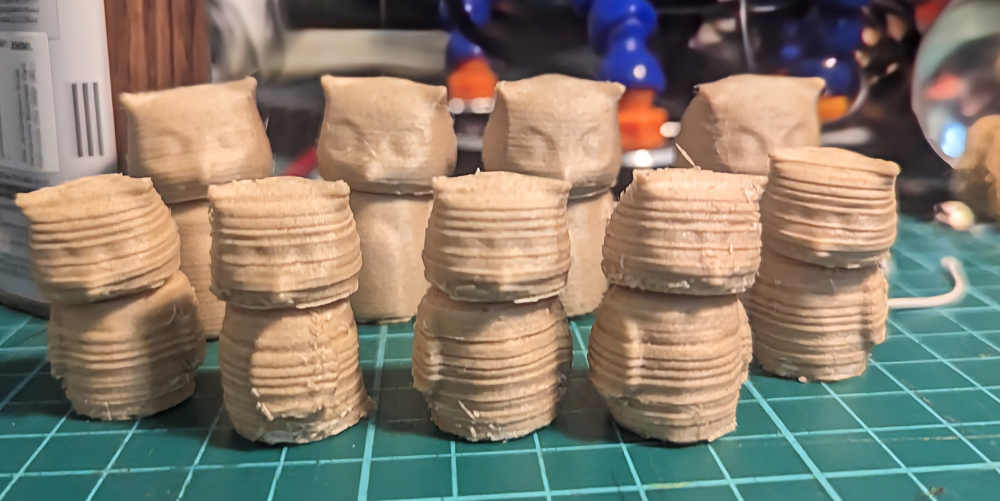

I spent some time working with wood filament when I first started 3d printing, but I haven’t used it since I started making my own dolls. With the potential for a craft fair coming up, I thought I’d revisit it to see if I could perfect my workflow for making simpler, low-cost items.
Painting a piece drives up the price I have to charge, because I need to prime and varnish it too, but wood is brittle and difficult to work with in post-processing, especially when you print multiple at the same time.
Sure enough, these two-part owl figures I made this spring seem perfect, but my first try (front) leaves a lot to be desired. I used a script from the blog tridimake to give the wood texture, but on this scale it loses too much of the detail and creates splinter-like stringing. Wood strengthens the filament along its length, but that just makes the strings harder to cut away.
I tried again, 125% bigger (back), but the texture script failed to run. I’m happy with the size though, it seems to strike a good balance between filament efficiency and ease of assembly. The square-cube law is a fickle mistress with chunky prints like this.
